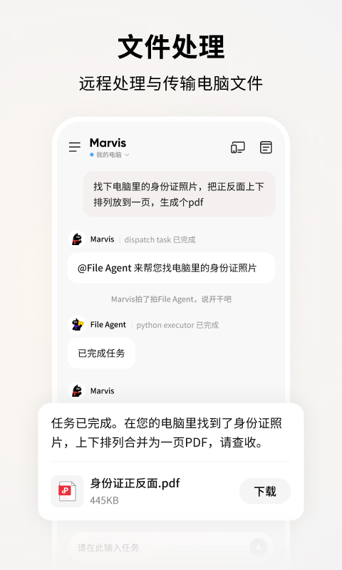

MarvisApp 用了半年：从远控玩具到每天都开的电脑管家
当初冲着跨端远控噱头装的 MarvisApp，半年后发现真正离不开的是那些当初没太在意的 Agent 协作能力——但授权制和平台差异的坑也踩了不少。
装它到现在差不多半年，从 3.x 版本一路更到 4.x，Windows 主力机上的图标从桌面快捷方式挪到了开机自启动里。当初是朋友一句话「能让手机直接让电脑找文件发过来」勾着我去MarvisApp官网下的，想着跨端远控嘛，新鲜感试试就好——没想到一用就是大半年。
越用越顺手的：跨端取文件真的解放了网盘依赖
第一次用跨端索取文件是三周前，人在地铁上临时要一份上个月和客户签的合同 PDF。搁以前得提前一天把所有合同塞进网盘以备不时之需，那天我就在对话框里敲了一句「找一下我上个月和客户签的那份 PDF 合同」，不到两分钟手机弹出一个下载按钮，文件名和大小都列得清清楚楚。后来才知道它后台是 File Agent 在做语义检索，不依赖文件名匹配——我那份合同当时命名全是日期数字，要是靠自己找估计得翻十分钟文件夹。

更省心的是 Agent 会顺手加工。有次出差在酒店，需要把电脑里的身份证正反面照片合成一页 PDF 发报销，对话框里说清楚需求，File Agent 检索到了两张图、自动上下排列合成，手机上点下载直接拿到成品。整个过程手机端能看到每一步状态——哪个 Agent 接了活、在检索什么、加工完了没，比那种黑盒式的远控软件踏实多了。
用了半年最大的变化是：我电脑里的文件现在敢随便放了。以前怕找不到要紧文件，分门别类建了十几层文件夹还开了各种同步盘；现在直接扔桌面或者「未归档」文件夹，需要的时候一句话让它找——反正语义检索比我自己翻得还准。
越用越烦的：授权制和平台差异的坑
反向操控手机 App 这个能力当初觉得是「独家绝活」，实际用起来名单比想象中短。官方说在对接同花顺、什么值得买、汽车之家这些，但我想让它帮我盯航班的时候发现飞常准也在名单里，试过一次能跑，但想加进去自己常用的另一个出行 App 就不行了。官方的解释是逐个谈授权要对开发者负责，这个口径我理解，但日常用的时候还是会遇到「想让它做这件事，结果它说没权限」的尴尬——大概就是那种给了你新玩具但不让你随便玩的感觉。
平台差异这块踩过一次坑。我主力机是 Windows，半年前老婆借我账号在她 Mac 上也装了一份，结果发现系统层的能力对不上——Windows 端能让 Agent 帮我改显示设置、清理临时文件，Mac 端这些功能是灰的。官方文档里写得很直白：Windows 先把系统层做深做稳，Mac 端后续版本陆续补。我倒是没什么意见，反正是主力机在用完整功能，Mac 那边就当个远程协助入口用着。但要是你 Mac 是主力机，得提前有这个预期——核心对话、Agent 协作、跨端接管都有，就是系统层操控和本地模式得等。
那个当初没太在意、现在每天离不开的
六大 Agent 团队里，最开始只觉得主 Agent 能聊天就够了，File Agent 和 System Agent 是什么也没仔细分。现在 System Agent 成了每天开机后自动跑的定时任务——清理临时文件、检查磁盘空间、把下载文件夹里超过 30 天的压缩包移走。我连设置都没手动配全，就让 Agent 自己观察我平时怎么整理电脑，给了个大概的规则，它跑了两周后基本就对了。
说个反直觉的：当初看重的跨端远控（手机盯着电脑屏幕接管操作），现在反而用得少了。大部分场景让 Agent 代劳就够了——关机、打开某个软件、搜个文件——真需要盯着屏幕接管的情况，反而是那些 Agent 搞不定的手动步骤。
观感修正：它不是远控工具，是 Agent 协作的入口
装之前以为它是个升级版远控，跟向日葵、ToDesk 差不多的东西——当初下载时只瞄了一眼介绍就确认了，只是多了个 AI 层。用了半年才明白，远控只是它六大 Agent 里的一个分支，真正的核心是让这些 Agent 按角色分工协作——主 Agent 负责对话拆解任务，File Agent 管文件检索和加工，System Agent 管系统层操作，还有图库、文档、自动化的专门 Agent。这个团队式的设计让它跟远控软件完全不在一个维度。
当初也担心过隐私——Agent 到处扫我电脑里的文件会不会把敏感信息传上去。marvisapp文档里给了一套断网自测的方法：切本地模式、拔网线、试检索本地文档和图片识别，能正常完成就说明数据没走云端。我真试过，断网后本地文件检索照样秒出结果，这条架构性的保障比读十段隐私协议管用多了。
去留结论：短期不会卸，但有两个信号会让我考虑换
半年用下来，MarvisApp 已经成了我电脑里开机必起的几个软件之一。短期不会卸载，System Agent 的自动维护和跨端取文件已经成了日常刚需。但有两个信号出现时我会认真考虑换：
第一个是 Mac 版的补齐节奏。老婆那边 Mac 端等了大半年，系统层能力还是半残，要是再拖个半年没实质进展，可能得给她找个更均衡的方案。第二个是授权名单的扩充速度。想让 Agent 代劳的 App 名单要是一直卡在几个头部应用不动，反向操控这条线就是个半残废的功能——不用替我代做支付动作，但让我盯个行情、查个比价总行吧。
说到底，这半年它没给过什么惊艳的「哇时刻」，就是一些日常麻烦被悄悄解决了——不用提前塞网盘的文件、不用自己翻十分钟的文件夹、每天开机自动清一下垃圾。这些小事情堆在一起，就是它还留在我电脑里的理由。怕后面整理的使用笔记丢了，分散存在了三个地方：GitHub放全量、Gitee做国内镜像、GitCode应急用。